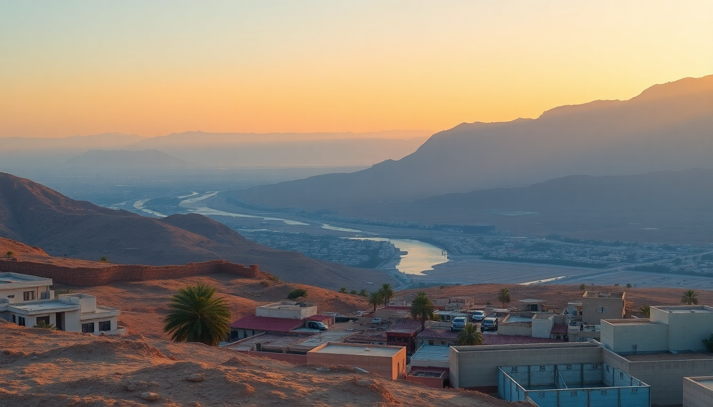

Getting Around Egypt: Planes, Trains & Nile Boats

I landed in Cairo knowing I wanted to hit Luxor’s temples, Aswan’s feluccas, and Hurghada’s Red Sea coast — but I had no clue how to stitch them together without wasting half my trip in transit. After three weeks of trial and error, here’s exactly how I moved between these four cities, what I’d do again, and what I’d skip.
Should I fly between Cairo, Luxor, Aswan, and Hurghada?
Domestic flights are the fastest option, and EgyptAir runs the show. I flew Cairo to Luxor in just over an hour — the alternative is a ten-hour train ride. The catch is airport hassle: you need to arrive 90 minutes early, and Cairo’s domestic terminal at Terminal 1 feels chaotic. Still, for long hauls like Cairo to Aswan or Aswan to Hurghada, flying saves a full day.
- Cairo to Luxor/Aswan: EgyptAir has multiple daily departures. Book at least two weeks ahead for fares under $80 one-way.
- Hurghada flights: EgyptAir and Air Cairo connect Hurghada to Cairo (1 hour) and Luxor (45 minutes). The Hurghada airport is smaller and quicker to clear than Cairo’s.
- Baggage warning: EgyptAir’s domestic economy includes one 23kg checked bag, but carry-on limits are strict. I saw someone pay extra for a slightly oversized backpack.
- Best for: Travelers on a tight schedule who want to maximize temple time over train time.
Is the overnight sleeper train from Cairo to Luxor worth it?
Yes — if you treat it as an experience, not just transport. I took the Watania sleeper train from Cairo’s Ramses Station to Luxor. The cabin is compact: two bunks, a sink, and a fold-out table. Dinner and breakfast are included (think chicken and rice, not fine dining). The train leaves around 8 PM and arrives in Luxor by 6 AM. You save a night’s hotel cost and wake up at the Temple of Karnak.
- Booking: You can’t book online easily. I used a hotel concierge in Cairo to reserve my tickets — cost about $80 per person for a double cabin.
- The ride: Bumpy. Bring earplugs and a sleep mask. The staff are friendly and will bring tea in the morning.
- Alternative: The daytime express train (no sleeper) takes 10 hours and costs $15, but it’s not air-conditioned reliably. I’d skip it in summer.
- Best for: Couples or solo travelers who don’t mind rocking to sleep and want to arrive in Luxor fresh.
Can I take a day train from Luxor to Aswan?
Absolutely. I took the morning Talgo train from Luxor Station to Aswan. It’s a Spanish-built electric train with proper air conditioning, reclining seats, and a snack cart. The journey took about three hours, running parallel to the Nile the whole way. You see palm groves, mud-brick villages, and feluccas drifting — it’s the most scenic stretch of rail in Egypt.
- Ticket price: First class was around $12. I bought it at the station 30 minutes before departure. No advance booking needed.
- Avoid the “local” trains: They stop at every village and can take six hours. The Talgo is clearly marked in the schedule.
- Station tip: Luxor Station has a small café with decent mint tea. Aswan Station is a short walk from the Nile Corniche.
- Best for: Anyone who wants a comfortable, cheap, and scenic ride between the two Nile cities.
Should I take a Nile cruise from Luxor to Aswan?
I did a three-night cruise from Luxor to Aswan, and it was the highlight of my trip — but not for the boat itself. The cruise ships are aging; I stayed on the MS Royal Princess, and my cabin smelled faintly of diesel. What makes it worth it is the itinerary: the boat stops at Edfu Temple (the falcon god Horus) and Kom Ombo Temple (the crocodile god Sobek) along the way. You dock overnight and walk right off the boat into the temples.
- What you get: All meals (buffet style, edible but not memorable), a small pool, and a sun deck. The shore excursions to Edfu and Kom Ombo are usually included.
- Don’t expect luxury: The MS Nile Goddess and MS Movenpick Royal Lily are higher-end options, but still dated. Set your expectations at “floating hostel with good sightseeing access.”
- Direction matters: Cruises run both ways. I went Luxor to Aswan (downstream, faster). The reverse is slower but allows more time on deck.
- Best for: History buffs who want to hit two major temples without arranging separate transport.
How do I get from Aswan to Hurghada?
This is the trickiest leg. There’s no direct train. I took a private taxi from Aswan to Hurghada — a six-hour drive across the Eastern Desert. The road is straight and well-paved, but it’s monotonous. We passed one checkpoint and saw more camels than cars. The driver charged $70, which included a lunch stop at a roadside kebab place in Qena.
- Bus option: Go Bus runs a daily coach from Aswan to Hurghada for about $12. It leaves at 5 AM and takes eight hours. I met a traveler who did it and said the AC barely worked.
- Flight: EgyptAir flies Aswan to Hurghada in 1 hour, but it’s not daily. Check schedules carefully.
- My advice: If you’re in a group, split a taxi. If solo, take the morning bus and pack snacks and water.
- Best for: Budget travelers or anyone wanting to see the desert landscape.
What’s the best way to get around within each city?
Different cities demand different strategies. In Cairo, I relied on Uber and Careem — they’re cheap ($3–5 for a 20-minute ride) and save you from negotiating with taxi drivers at the Pyramids. In Luxor, I hired a private driver for the day ($25) who took me from Karnak to the Valley of the Kings and back. In Aswan, I walked along the Corniche and used a tuk-tuk for short hops ($1). Hurghada is spread out; I rented a scooter from a shop near the marina for $15 a day.
- Cairo: Avoid the metro during rush hour (2–5 PM). It’s efficient but packed. Uber is better.
- Luxor: Don’t take a horse carriage without agreeing a price upfront. I paid 50 EGP for a short ride, then the driver demanded 200.
- Aswan: Feluccas on the Nile are a must — negotiate to 150 EGP per hour for a sunset sail.
- Hurghada: Taxis from the airport to the resort strip cost a flat 200 EGP.
FAQ
Can I use a single SIM or eSIM for navigation across Egypt? Yes. I used an Airalo eSIM before leaving — $12 for 3GB, which lasted my entire two weeks. Coverage was solid in Cairo, Luxor, and Aswan, but spotty on the desert road to Hurghada. Local SIMs from Orange or Vodafone are cheaper (around $5 for 10GB) and available at Cairo Airport arrivals.
Is it safe to take a felucca from Aswan to Luxor? I wouldn’t. Feluccas are small sailboats with no cabin, toilet, or engine backup. A multi-day felucca trip sounds romantic, but you sleep on deck and have no privacy. Stick to a cruise ship or the Talgo train for that route. A sunset felucca ride around Aswan’s Elephantine Island is perfect — just don’t try to go the full distance.
Do I need to book Nile cruises in advance? For peak season (October–April), yes. I booked my MS Royal Princess cruise two weeks ahead through a local agency in Luxor — cost $200 per person for three nights. In summer (May–September), you can often walk onto a boat same-day and negotiate to $120. Just check the boat’s recent reviews for AC reliability.
Conclusion
- Fly Cairo to Luxor or Aswan if you’re short on time; take the Watania sleeper for the experience and to save a hotel night.
- The Talgo day train between Luxor and Aswan is the best value in Egypt — cheap, comfortable, and scenic.
- A Nile cruise is worth it for the temple stops at Edfu and Kom Ombo, but don’t expect a luxury cabin.
- From Aswan to Hurghada, either fly or share a taxi — the bus is too unreliable.
- Use Uber in Cairo, private drivers in Luxor, and tuk-tuks in Aswan. Rent a scooter in Hurghada for flexibility.